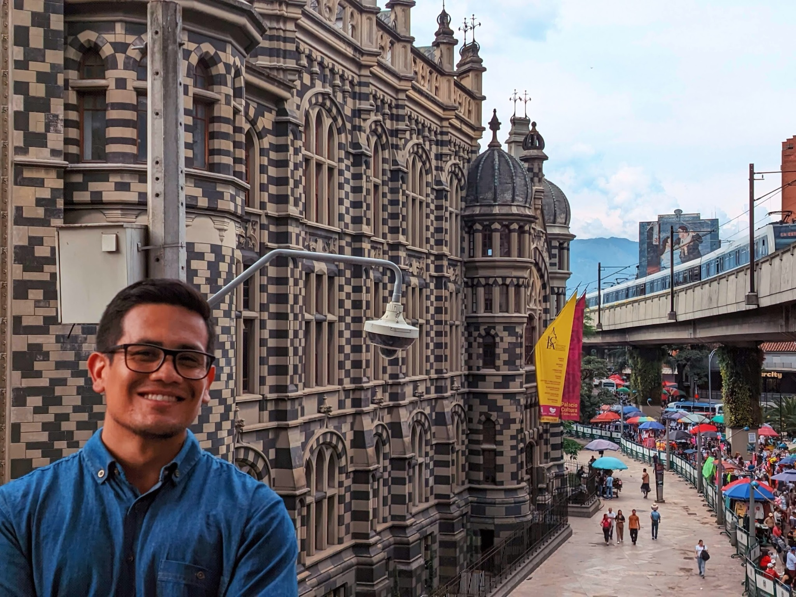

YOUTUBE VIDEO EDITING
Editing, pacing, sound design, color and final delivery.
TURNING RAW FOOTAGE & IMPERFECT AUDIO
INTO CONTENT PEOPLE WANT TO WATCH.
Editing. Sound. Social Content.
For brands, creators and storytellers.
Editing, pacing, sound design, color and final delivery.
Full episode editing, dialogue cleanup and social-ready clips.
Long-form content turned into engaging Shorts, Reels and verticals.
Noise reduction, restoration, mixing and sound enhancement.
01 / THE APPROACH
My audio background shapes the way I edit: rhythm, dialogue, silence, transitions and sound all work together to keep attention.
VIDEONoise · Room tone · Inconsistent levels
Clean dialogue · Controlled dynamics · Clear voice

03 / ABOUT
I'm a Video Editor and Sound Designer based in Colombia, focused on turning raw footage, dialogue and ideas into polished content for digital platforms.
My background in audio engineering gives me a different approach to editing: I don't only focus on how a video looks — I pay close attention to how it sounds, flows and feels.
04 / LET'S WORK